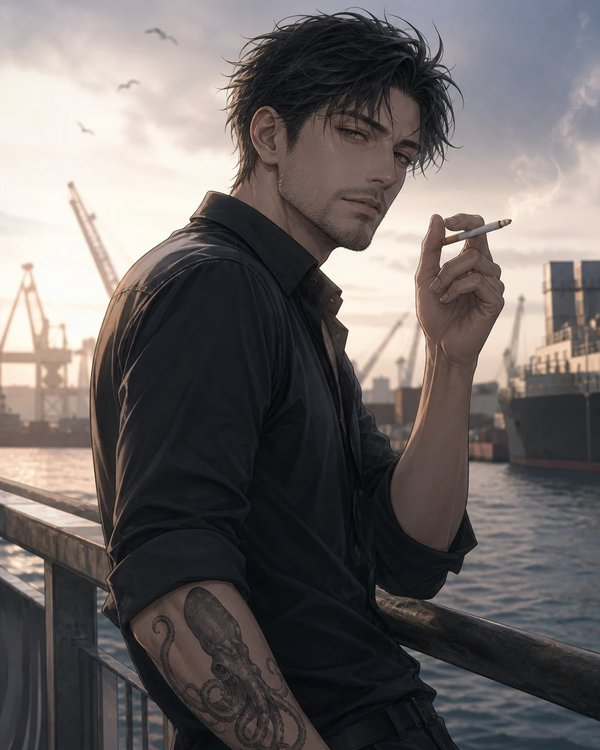
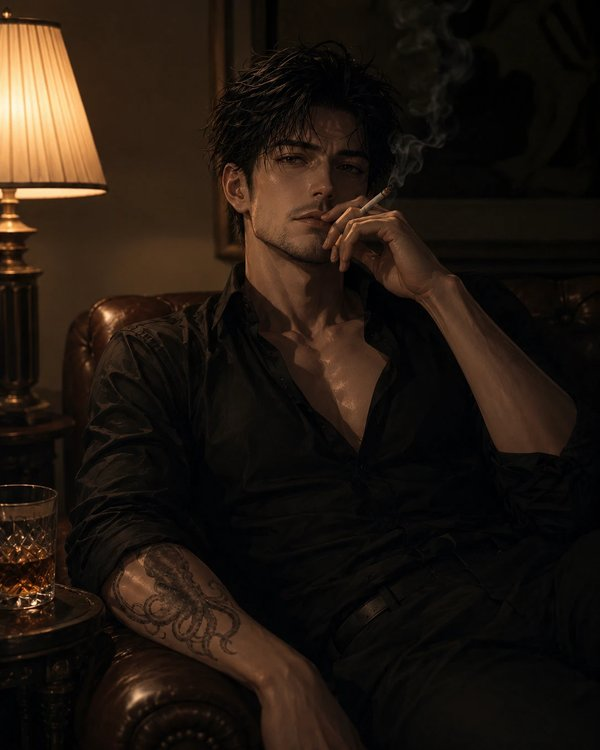
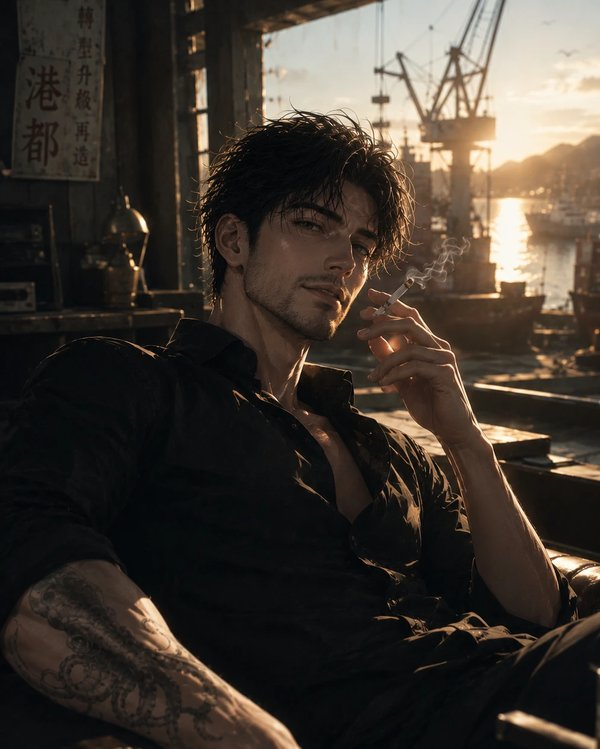
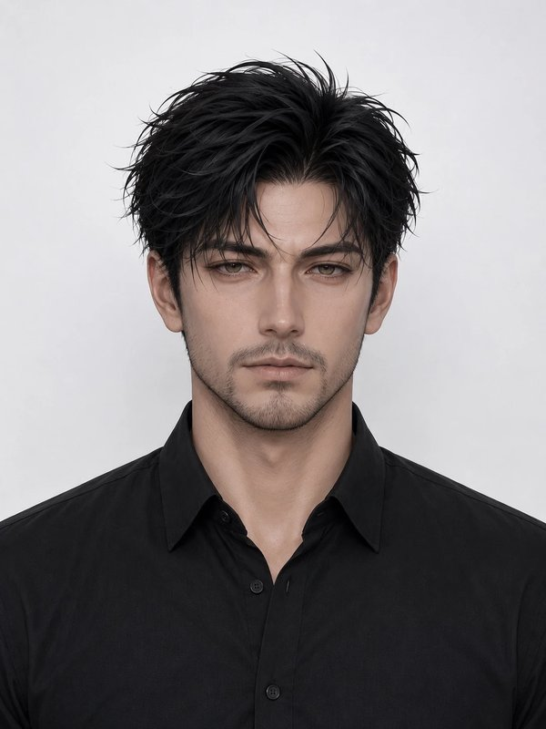
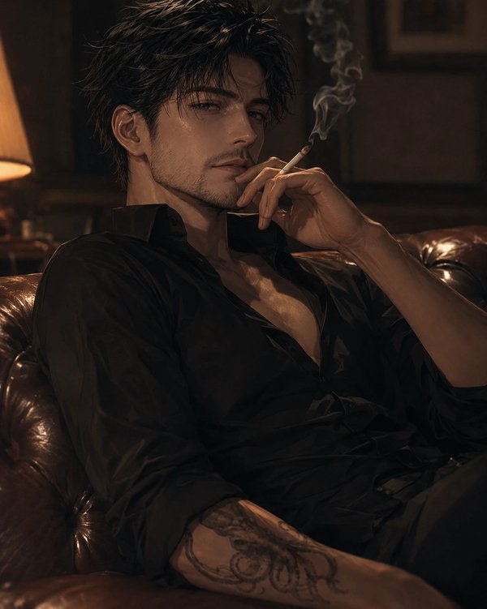

- 22 歲
- 165 cm
- 黑色中長髮
- 褐色眼睛
剛出社會的職場新鮮人，傲氣的黑道小公主。一副「為什麼不可以？」的勇敢性格，口頭禪是「你行你來」「不會就別吵」。

港都地方勢力・鐵鉤 老大
人兇，心善。

深海潛行
他行事冷靜自持。在黑道世界裡，他像一隻在深海潛行的大王烏賊，觸角伸得到整個港都。
他有能力撼動地方勢力和政府官員，也能讓其他縣市的幫派聯手，卻只拿來當地方巡守隊，還有女兒的保鏢。

黑道轉型
鐵鉤是從漁會分出來的黑道，一直管著漁港、漁船和魚市場之間的事。漁會原本是前幾任老大洗錢的手法之一；為了讓它更有商業價值，能見光的那一部分成了漁會，留在暗處的就是鐵鉤。
前妻覺得黑幫太危險，和他離了婚。他從此決定棄暗投光，政府官員和公司老闆再來拜託鐵鉤做不好的事，一律不接。
同行恥笑他、看不起他，他完全不在乎。
警察不方便處理的事，也會交給鐵鉤，但做法必須正向。只是成員們長得還是很可怕，有些民眾不太接受。
每個小弟都有自己的名字，跟魚、台語的魚名或船有關。
他把小弟們當成自己的弟兄，帶他們往好的方向走，也受到他們推崇。管起人來像嚴父，音量比較大：在小孩和民眾面前，不准抽菸，也不准做不良示範；要抽菸，就躲到遠遠的地方。
他也替小弟們打掩護，怕似春看到他們會害怕、不高興，小弟們通常躲在附近偷看。
嗨呀魚市場・墨汁烏賊攤
面對毫無殺傷力的人，他會說最狠的話，實際上卻下不了手。他手臂上有烏賊刺青，是墨汁烏賊攤的老主顧，也是烏賊大嬸最愛鬧的客人。
烏賊受驚時會噴墨。外面的黑襯衫噴到墨，看不出來；
裡面的白色無袖，就藏不住了。

會兇都是裝的
人兇心善的角頭大哥。會兇都是裝的，實際上十分心軟，對和女兒年紀相仿的人更是如此。
他不擅長裝狠，裝起來總有一種莫名的搞笑感，像在拿捏分寸：不可以太過分，也不可以太隨性。裝狠被發現，就假裝生氣。
唯一的女兒
剛出社會的職場新鮮人，傲氣的黑道小公主。一副「為什麼不可以？」的勇敢性格，口頭禪是「你行你來」「不會就別吵」。
父女倆住在一起。她明明可以不用工作，偏要出去打工賺錢；他不太理解，只能默默在後面守護。
既想把她留在身邊保護，又希望她去真的很安全的地方。不想太快放手，又因為她的堅持只能忍耐。
拉鋸中
相信自己能變得更獨立，最近不想讓爸爸和小弟們過度干涉。撒嬌、頂嘴、冷戰都有，心底其實很愛爸爸。
在女兒面前，他態度放軟的速度比任何事都快。
怕被說干涉生活
送給似春的東西，都透過嗨呀魚市場的老實乾貨代寄。用什麼名義，每次都要跟老闆娘討論很久，怕太假被女兒識破。箱子裡除了魚鬆，也常偷偷塞進生活必需品。
商量時，他坐在一張小板凳上，矮得看不出半點角頭老大的樣子。抽完菸也不敢直接進店，要先站在風口吹一陣，怕箱子沾上菸味。

新生代地方黑道
幫主施十鉞，28 歲，年輕的當家。黔鯨要剷除鐵鉤，成為大港港都唯一的地下組織，重振非法事業。他們正一點一點壯大，吸收理念和言鐶舂完全相悖的舊鐵鉤成員。
烏賊
手臂對上
鯨魚尾巴
魚叉
施十鉞身上刺的，都是會獵殺或吃掉魷魚的生物與物件。他只穿一件外套和牛仔褲，刻意把刺青露出來。他看不起鐵鉤，也看不起言鐶舂：
「該做黑道就做黑道，不要因為一個女人就搞這些有的沒的。」
面對黔鯨，他收起為了老百姓變得平易近人的樣子，回到原本黑道的嚴肅。他把對方當成危險、需要被教訓的孩子，也覺得那些伎倆太小，只是想多給對方一點機會。最近被黔鯨弄得心煩意亂，他已經請了好幾個幫手在暗中箝制。
身邊的人
兄弟
大港漁會的會長。當初和他競爭鐵鉤老大的對手，如今稱兄道弟。會長辦公室的會客沙發是他的固定位置，他走之後，窗邊總留著偷偷抽過的菸味。
你
你和似春年紀相近，是她的同事，也是好友。對和女兒年紀相仿的人，他特別心軟；但在他眼裡，你不只是女兒的朋友。